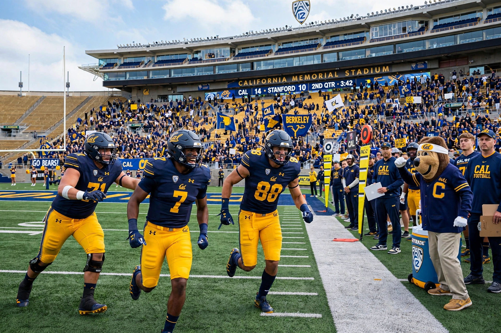

The California Golden Bears are the athletic teams of the University of California, Berkeley, competing in NCAA Division I. Cal fields around 30 varsity sports, with colours blue and gold and mascot Oski the Bear.

Cal teams have won over a hundred NCAA team championships, notably in swimming and diving, water polo, rugby (played as a varsity club with many national titles), crew and gymnastics. The football programme, dating to 1882, is famed for 'The Play' — the five-lateral kickoff return beating Stanford in 1982 — and for coach Pappy Waldorf and the early 'Wonder Teams' of Andy Smith. Men's basketball won the NCAA title in 1959 under Pete Newell.
The chief rival is Stanford, contested in the annual Big Game for the Stanford Axe. In 2024 Cal left the Pac-12 for the Atlantic Coast Conference amid conference realignment. Alumni Olympians and stars include swimmer Natalie Coughlin and football players Aaron Rodgers and Marshawn Lynch. See UC Berkeley.